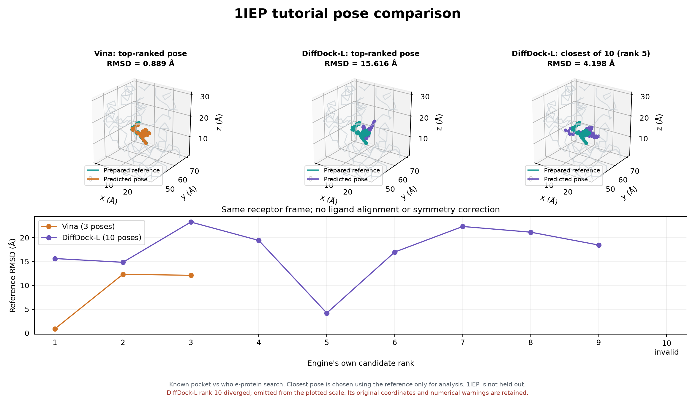

호출 가능한 도킹 실행기
dock(request)와 CLI로 Vina 계열을 연결하고 실행별 기록을 보존했습니다.
Codex가 호출할 Python 실행기를 만들고, Windows에서
Vina · Vina-GPU · DiffDock-L을 같은 1IEP 준비 구조로 실행한 기록입니다.
차재민 · Abstain-DTI 러너의 개인 개발 결과
실험 결과 바로 보기dock(request)와 CLI로 Vina 계열을 연결하고 실행별 기록을 보존했습니다.
Vina·Vina-GPU를 공통 실행기로, DiffDock-L을 별도 CLI로 실행했습니다.
DiffDock-L 출력 10개 중 1개에서 좌표 발산을 확인하고 검사·경고 기록을 보완했습니다.
처음 보는 단어는 밑줄 용어를 눌러 읽는 법·쉬운 뜻·이번 실험에서의 의미를 확인하세요.
이번 단계의 대상은 결합 자세 생성과 실행 관리입니다. 실험 친화도 예측의 개선 효과를 검증한 결과는 아닙니다.
LLM의 도구 호출을 실제 계산·기록으로 연결하는 실행 경로를 만들었습니다.
에이전트가 도킹을 요청했을 때 실행 명령만 보내는 데서 끝나지 않고, 입력과 실행 조건을 확인하고 후보 자세·점수·로그를 되돌려주는 재사용 가능한 경로가 필요했습니다.
사용자 요청 해석 → 도구 호출 판단 → 결과 해석
dock(request) / run.py준비된 PDBQT · 포켓 박스 · 엔진별 실행 옵션
diffdock_windows.py1IEP 검증용 CLI · PDB + SDF · 모델 추론
dock(request)에 아직 통합하지 않았습니다.로컬 docking-agent/ 안의 주요 구현 파일입니다.
표는 좌우로 밀어 전체 항목을 볼 수 있습니다.
| 파일 | 담당 기능 |
|---|---|
docking_agent/runner.py | Vina 계열 공통 함수 dock(request) |
run.py | JSON 요청을 받는 CLI |
diffdock_windows.py | DiffDock-L 1IEP 전용 검증·실행 CLI |
docking_agent/geometry_sanity.py | 기본 결합 길이 검사 |
compare.py · compare_diffdock.py | 입력 대조·참조 RMSD·실행 결과 비교 |
scripts/ · tests/ | Windows 준비·빌드 및 실행기 오류 처리 검사 |
from docking_agent import dock
result = dock(
request,
base_dir=request_path.parent,
output_dir="outputs/1iep",
)request에 수용체·리간드 경로, 같은 좌표계의 포켓 박스, 엔진·시드·탐색 옵션을 전달합니다.
run-<timestamp>-<id>/
request.json
receptor.pdbqt · ligand.pdbqt
poses.pdbqt · pose-001.pdbqt …
stdout.log · stderr.log
result.json실행마다 새 폴더를 생성합니다. 결과 파일에 입력 해시와 엔진 버전·옵션·시간을 함께 남깁니다.
이 웹페이지에는 구현 설명과 실측 요약을 게시했습니다. 실행 코드와 대용량 환경·가중치는 로컬 개발 폴더에 보존되어 있습니다.
실행 가능성과 결과 검사 경로를 확인하기 위해 준비된 1IEP 한 쌍을 사용했습니다.
수소를 제외한 원자 2,229개
PDB ↔ PDBQT 좌표 일치
SDF ↔ PDBQT 원자 대응 확인
참조 좌표 오차 0 Å
단백질 좌표계 고정
리간드 재정렬·대칭 보정 없음
중심 [15.19, 53.903, 16.917]
박스 변 길이 [20, 20, 20] Å
포켓 박스 미제공
공식 v1.1 모델·기본 추론 일정 사용
위 두 그림은 탐색 조건을 설명하기 위한 도식이며, 실제 1IEP 단백질 표면이 아닙니다.
표는 좌우로 밀어 전체 항목을 볼 수 있습니다.
| 항목 | Vina CPU | Vina-GPU | DiffDock-L |
|---|---|---|---|
| 입력 형식 | PDBQT + PDBQT | PDBQT + PDBQT | PDB + SDF |
| 탐색 위치 | 알려진 20 Å 박스 | 같은 20 Å 박스 | 전체 단백질 |
| 탐색 옵션 | CPU 4 exhaustiveness 8 | thread 8000 RILC-BFGS 사용 | samples 10 기본 schedule |
| 후보 요청 | 최대 5개 | 최대 5개 | 10개 |
| 시드 | 20261009 | ||
이 비교의 목적은 도구 연결과 결과 검사를 확인하는 것입니다. 포켓 정보·탐색량·후보 수가 달라 동일 조건의 성능 경쟁으로 해석할 수 없습니다.
우리가 사용한 CPU Vina 1.2.7과 Vina-GPU 2.1은 버전·탐색 구현·최적화 옵션이 다른 프로그램입니다. 여러 시작 배치에서 위치·회전·비틀림을 바꾸며 찾으므로 탐색 경로와 계산량이 달라지면 후보도 달라질 수 있습니다.
같은 시드 숫자도 서로 다른 프로그램의 탐색 경로를 같게 만들지는 않습니다. 이번 CPU의 exhaustiveness=8과 GPU의 thread=8000은 다른 설정이며, GPU에서는 RILC-BFGS도 켰습니다. 이번 차이를 단순히 CPU와 GPU의 계산 정밀도 탓이라고 확정하지 않았습니다.
Vina 계열도 무작위 탐색을 하고, DiffDock-L도 여러 후보를 생성합니다. 차이는 어떤 규칙으로 배치를 개선하고 후보를 정렬하는가에 있습니다. 이번에는 포켓 위치를 Vina 계열에만 제공했으므로 방법과 입력 조건의 차이를 함께 봐야 합니다.
확인 근거: Vina 공식 FAQ · Vina-GPU 옵션 · RILC-BFGS 논문 · DiffDock 원리 논문 · DiffDock-L 관련 논문
85c49b60d3e0b0182a59ee43a34a6d7036981284, 가중치는 v1.1입니다.세 엔진 모두 출력을 만들었고, 이번 조건에서 Vina 계열의 최고 순위가 참조에 가까웠습니다.
표는 좌우로 밀어 전체 항목을 볼 수 있습니다.
| 엔진 | 전체 실행 시간 | 출력 후보 | 1위 참조 RMSD | 후보 중 최소 RMSD |
|---|---|---|---|---|
| Vina CPU 알려진 포켓 | 61.078초 | 3개 | 0.889 Å | 0.889 Å 1위 |
| Vina-GPU 알려진 포켓 | 4.844초 | 5개 | 0.892 Å | 0.892 Å 1위 |
| DiffDock-L 전체 단백질 탐색 | 97.654초캐시 재사용 | 10개기본 기하 검사 실패 1개 포함 | 15.616 Å | 4.198 Å 5위 · 사후 비교 |
CPU·GPU의 1위 후보를 서로 직접 비교하면 RMSD는 0.088 Å입니다. 중원자 37개를 같은 좌표계에서 대조했으며, 이번 두 최상위 자세가 매우 가깝다는 뜻입니다. 위 표의 참조 대비 RMSD와는 다른 비교입니다.
시간빌드·가중치 다운로드·GPU 커널 생성·DiffDock 최초 테이블 생성은 위 비교에서 제외했습니다. 함수·실행기 전체 경과 시간으로, 순수 계산 시간만의 비교가 아닙니다.
RMSD대응하는 리간드 원자들의 좌표 차이를 요약한 값입니다. 작을수록 준비된 참조에 가깝습니다. Vina 출력의 ‘최고 예측 자세 대비 RMSD’와 구분해 별도 계산했습니다.
점수Vina 1위 에너지는 −13.270, Vina-GPU는 −13.3 kcal/mol입니다. DiffDock-L 1위 confidence −3.30은 별도의 자세 순위 점수이며 확률·친화도가 아닙니다.

후보 생성과 후보 선택은 별개였습니다. DiffDock-L에서 참조와 가장 가까운 것은 1위가 아닌 5위였습니다. 5위를 고른 기준은 정답 참조를 이용한 사후 RMSD이며, 모델이 정답 없이 이 후보를 선택한 결과가 아닙니다.
표는 좌우로 밀어 전체 항목을 볼 수 있습니다.
| 실행 | 전체 시간 | 모듈·테이블 초기화 | 샘플링 |
|---|---|---|---|
| 첫 실행 | 1,221.925초 | 1,156.210초 | 32.108초 |
| 캐시 재사용 | 97.654초 | 32.048초 | 32.585초 |
첫 실행은 회전·비틀림 분포 테이블 생성 비용이 컸습니다. 캐시 이후에도 모듈 초기화, 모델 로딩, ESM-2 임베딩과 결과 처리 비용은 남습니다. 초기화·샘플링 열은 전체 시간에 포함되는 부분입니다.
같은 시드로 두 번 실행했을 때 최고 순위 RMSD는 15.6162 Å와 15.6161 Å였습니다. 후보 전체가 비트 단위로 같지는 않았고, 두 실행 모두 발산 후보가 남았습니다.
프로세스가 성공 종료해도, 생성된 자세 파일의 품질은 별도로 확인해야 했습니다.
SDF 10개 생성
유한한 좌표·원자·결합 목록 확인
이 유기 리간드에
느슨한 0.5–3 Å 범위 적용
9개 기본범위 내
1개 좌표 발산
invalid 표시경고 15회는 서로 다른 후보 15개가 실패했다는 뜻이 아닙니다. 로그는 여러 추론 단계에서 1 / 10 samples failed를 반복 보고했습니다. 이 검사 결과만으로 Windows가 발산의 원인이라고 판단할 수도 없습니다.
남은 검증: PoseBusters, 단백질–리간드 충돌, 정식 물리 타당성, 실험 친화도 검증은 수행하지 않았습니다. 나머지 9개도 이러한 검증을 통과한 후보라는 뜻은 아닙니다.
이번 개발로 확보한 실행 경로와, 아직 검증하지 않은 부분을 정리합니다.
준비된 단백질 구조
체인·좌표계·포켓 박스
후보 자세·점수
설정·시간·품질 경고
물리 타당성·충돌 검사
채택 여부 판단
점선 상자는 연결 위치를 보여주는 설계입니다. 팀 Orchestrator·다른 Agent와의 실제 연동 완료를 뜻하지 않습니다.
확보한 것은 실행 가능한 도킹 도구 연결과 결과를 검사할 기록입니다.
Affinity 예측 향상 여부를 판단하려면 이후 별도의 평가가 필요합니다.
밑줄 있는 용어는 각 구역의 첫 등장에 표시했습니다. 눌러서 설명을 열거나 아래에서 찾아볼 수 있습니다.
수치는 2026-11-06 로컬 실행 결과·로그·비교 JSON에서 가져왔습니다. 역할·조건 도식과 실제 좌표 그림을 구분했습니다. 이 정적 페이지에서 도킹 모델이나 API를 호출하지 않습니다.